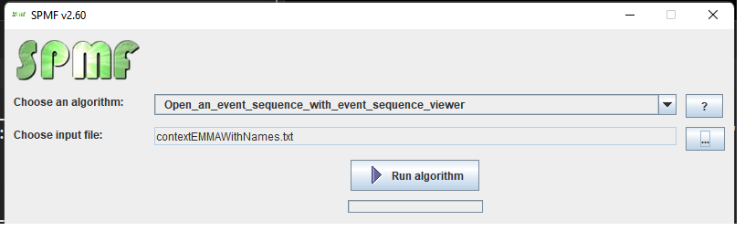
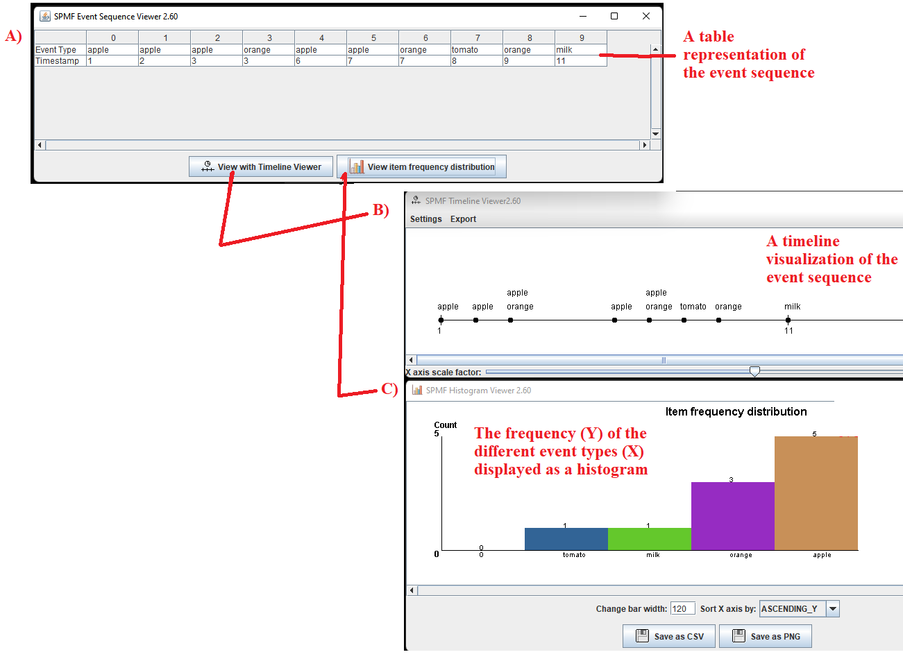

View an event sequence file using the SPMF Event Sequence Viewer (SPMF documentation)
Event sequences are a type of data used by several data mining algorithms such as EMMA, TKE, and MINEPI.
SPMF offers a tool to view the content of an event sequence file in SPMF format. This tool is called the SPMF Event Sequence Viewer.
This page explains how to use this tool with an example.
How to run this example?
If you want to run this example from the graphical interface of SPMF, (1) choose the algorithm "Open_an_event_sequence_with_event_sequence_viewer", (2) choose the contextEMMAWithNames.txt file as input, and then (3) click "run algorithm"

- If you want to run this example from the source code of SPMF, run the file MainTestARFFViewer, which is located in the package ca.pfv.spmf.tests
- If you want to execute this example from the command line interface of SPMF, then execute this command:
java -jar spmf.jar run Open_an_event_sequence_with_event_sequence_viewer contextEMMAWithNames.txt
in a folder containing spmf.jar and the file contextEMMAWithNames.txt which is included with SPMF.
What is displayed?
After running the example, the content of the file will be displayed by the Event Viewer. The picture below shows the user interface of this viewer. The window A) is the main window. It displays the event sequence using a table. The table has two rows. The first row indicates the type of events and the second row indicates the timestamps at which each event was observed. For example, in the picture below, the event "apple" was observed at time 1. Then, the event "apple" was observed again at time 2 and time 3. Then, the event orange was observed at time 3, and so on.
The EventSequenceViewer also offers two other important features:
- By clicking on the button "View with Timeline Viewer", a new window is opened that provides a visual representation of the event sequence as a timeline, presented as window B) in the picture below. This window has some menus that let us change the appearance of the timeline and gives us the option to export this visualization as a picture.
- By clicking on the button "View item frequency distribution", a new window is opened that displays the frequency distribution of the different event types, presented as window C) in the picture below. This window provides the feature of exporting the data from the frequency histogram as a CSV file so that it can be imported in other software (e.g. Excel), as a picture, and this window allows us to change the appearance of the histogram (changing the bar width and sorting the data).

What is the input?
The algorithm takes as input an event sequence, as used by algorithm such as TKE and EMMA . An event sequence is a sequence of events that have timestamps.
The database used in this example is provided in the text file "contextEMMAWithNames.txt" in the package ca.pfv.spmf.tests of the SPMF distribution. The content of this file is shown below.
@CONVERTED_FROM_TEXT
@FILETYPE="Transaction database with timestamps"
@SOURCE="SPMF SOFTWARE https://philippe-fournier-viger.com/spmf/"
@ITEM=1=apple
@ITEM=2=orange
@ITEM=3=tomato
@ITEM=4=milk
1|1
1|2
1 2|3
1|6
1 2|7
3|8
2|9
4|11
The format is defined as follows.
The first line indicates that it contains text strings for representing events. The second and third lines are optional metadata information indicating the type of file and the source of the data. Then, the following lines defines the names that are given to the event types. More precisely, the second line starts with the keyword @ITEM= and defines that the event type 1 will be called apple. The third line indicates that event type 2 will be called orange. The fourth line indicates that event type 3 will be called tomato. And the fifth line indicates that event type 4 will be called milk.
After that there is the next section, which describes the events from the sequence. In that section, an item (event) is represented by a positive integer (1, 2, 3, 4 in this example). And each line is a transaction (event set). In each line (event set), items are separated by a single space. It is assumed that all items (events) within a same transaction (line) are sorted according to a total order (e.g. ascending order) and that no item can appear twice within the same event set. Each line is optionally followed by the character "|" and then the timestamp of the event set (line).
For instance, the line 1|1 indicates that the event type 1 (which is Apple) was observed at time 1. Similarly, the line 1 2|3 indicates that the event types 1 (which is Apple) and 2 (which is Orange) where both observed at time 3. The other lines follow the same format.